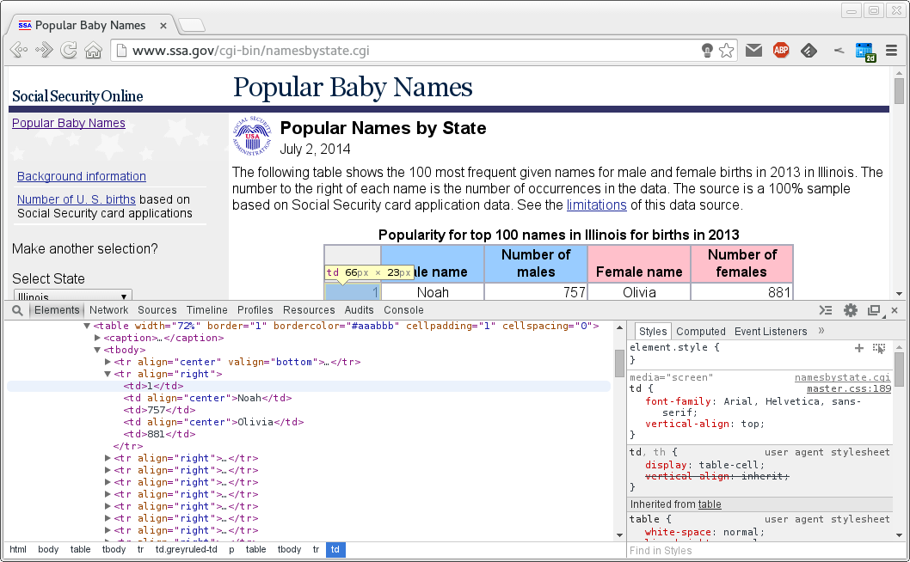

Grab the template file: babynames.py
In this problem, we will use Beautiful Soup to parse the HTML page for the most frequent baby names in 2013 in Illinois based on Social Security card application data.
Before you begin, install Requests:
$ sudo apt-get install python-requests
n
We will create a class named BabyNames, which must have at minimum the following:
Attributes:
state(unicode string): Two-letter abbreviation of state,
year(unicode string): Year from 1960 to 2013,
fields(list of unicode strings): Headers of the table.
Methods:
get_page(self): Fetches the HTML page on SSA using Requests. Takes no argument and returns a string (unicode),
parse_page(self, page): Uses Beautiful Soup to parse an HTML page fetched with get_page() method. Takes a unicode string of concatenated HTML and returns a dictionary of the form {fields: [column values]}.
The __main__ part is already written for you. You don't have to change anything here. Study this first to get the big picture. We create our object, fetch the HTML page, parse it, then display the top 5 baby names to make sure that we got them right. If your code runs successfully, you will see this:
Top 5 baby names for IL, 2013
Females: Olivia(881), Sophia(851), Emma(786), Isabella(671), Emily(558)
Males: Noah(757), Alexander(728), Jacob(728), Liam(722), Michael(695)
The fields attribute is already defined for you. There are two more attributes: state and year. Initialize them.
In the get_page() method, refer to More Complicated POST requests and
requests.post() to make an HTTP request. Pass query to the data argument. Return r.text.For the function parse_page(), we need to first understand how the HTML page you want to parse is structured. In Chrome, I right-clicked on the web page and selected "Inspect Element" from the pop-up menu.

Your browser should have a similar method that shows the HTML source. Note in the figure that a row is surrounded by <tr align="right">...</tr> and each column within that row is surrounded by <td>...</td> or <td align="center">...</td>.
rank, male_name, number_of_males, female_name, and number_of_females.Note that all strings in this problem will be unicode strings (Python type unicode). Since parsing the HTML source gives us unicode strings, it is easier to make everything unicode including the dictionary keys.
Study the examples in the docstring. When you use one of the elements in the self.field attribute as a dictionary key, you should get the corresponding column in the table. (I hope this is intuitive and makes sense.)
<firstname>-<lastname>-babynames.py and upload it to Moodle.Grab the template file: pdstats.py
In the previous weeks, we have seen different ways to read selected columns from the census CSV file and calculate basic statistics. In this problem, we will see how easy it is to perform the same task using Pandas. Remember, the purpose of this problem is to let you experience how easy it is to make a data table using Pandas. Don't overthink it.
First, write a function named read_census() that takes the filename (string) as an argument and returns pandas.DataFrame.
Next, write a function named get_stats() that takes a Pandas DataFrame as the first argument and the column key (str) as the second argument, and returns a tuple of minimum, maximum, mean, and median.
This part is all written for you. You don't have to change anything here.
<firstname>-<lastname>-pdstats.py and upload it to Moodle.Grab the template file: twittercloud.py
I got the idea for this problem while I was talking to Ola from our class and she mentioned infographics. So if this assignment turns out to be too difficult, you can blame her (thanks, Ola!). Don't worry, because the bulk of the code is already written and provided for you, and you only have to write two functions, clean_statuses() and get_counts(). We will begin with a trending topic, fetch some tweets, and create a tag cloud such as this one created by searching for #informatics (I think I see Champaign in there),
Before we begin, you need to install some third-party libraries. You might have had some trouble with python-twitter package in the apt-get repository. Uninstall this and use pip install instead:
$ sudo apt-get purge python-twitter
$ sudo apt-get install python-pip
$ sudo pip install twitter
You should also install PyTagCloud by doing:
$ sudo apt-get install python-pygame python-simplejson
$ sudo pip install pytagcloud
After installing the required packages, open up the template and take a look at the main() function. You have to get Twitter OAuth credentials and obtain API access at https://dev.twitter.com/apps as detailed in Chapter 1 of Mining the Social Web 2nd Edition by Matthew A. Russell (hereafter referred to as simply the book), and fill in your OAuth credentials in place of the empty strings.
The rest of the main() function is already written for you, and you don't have to do anything here, although I encourage you to spend some time to understand the big picture.
Next, note that there is a function named search_twitter(). It is a slight modification of the trending topics search routine of Example 1-5 in the book,
search_twitter(twitter_api, q, search_size = 100, stop_count = 1000)
where twitter_api is the twitter.api.Twitter object, and q is the query string. You don't have to change anything in this function.
If you read the book, you know that statuses returned from search_twitter() function is a list of dictionaries that contains all the metadata from every tweets we fetched. We need to extract only the text data. We also need to clean up the texts since many of them contain non-alphabetical characters as well as special characters such as hashtags and @ signs, and HTTP links. Thus,
clean_statuses() that takes a list of dictionaries containing tweet metadata as an argument, and returns a list of strings.The argument statuses is a list of dictionaries, so the texts we need are in statuses[0]['text'], statuses[1]['text'], etc. We can extract the texts and make a list named status_texts by writing
status_texts = [status['text'] for status in statuses]
These texts will be Unicode strings, and if you are using Python 2, you have to convert them to ASCII strings. You can do this by
status_texts = [text.encode('ascii', 'ignore') for text in status_texts]
If you are not familiar with these syntaxes, these are called list comprehensions. These two lines are already in the template so you don't have to write them again.
Now your job is to write the rest of this function by using re regular expression operations to
and remove all words that contain the following:
The easiest way to do this (that I can think of) is substituting any word that matches the above patterns with empty strings '' (using regular expressions, or regex for short), and at the end, using list comprehension to remove all the empty strings from the list.
At this point, you should
and finally,
Here is an example of how all this works. After extracting only the texts from the metadata and converting them to ASCII strings, status_texts will be a list of about 1000 strings. But to keep this example short, let's say our status_texts was a list of these three strings,
['Keeping track of agricultural data presents special problems for #informatics systems - http://t.co/oYMC7pvylY', 'Apply by July 7 for NLMs biomedical #informatics course (Sept. 14-20). Its free, too. Details: http://t.co/FVfTXx4QBa', 'RT @rebrandtoday: #startup MEDongle .com-#secure #medical #Record #storage and access.#medicaltech #dongle #healthcare #informatics #VC #ve']
At the end, we want to clean this up and return a list of
['keeping', 'track', 'of', 'agricultural', 'data', 'presents', 'special', 'problems', 'for', 'systems', 'apply', 'by', 'july', 'for', 'nlms', 'biomedical', 'course', 'sept', 'its', 'free', 'too', 'details', 'rt', 'medongle', 'com', 'and', 'access']
Note that words that had #'s, @'s, numbers, or links in them are all gone now, and we have a list of nicely looking words. If you are confused about how to do some of the operations, you can simply google e.g. "python convert string to lowercase" or ask us questions.
Now, returned from the clean_statuses() function is a list of nicely cleaned-up lowercase words. To create a tag cloud, we need the frequency of each word, because the size of each word in the tag cloud is determined by the frequency of the word. Our third-party library PyTagCloud needs a list of tuples of the form (word, frequency) in order to create a tag cloud. Thus, we will write a function named get_counts() to calculate the frequency of each word and return a list of tuple of the form (string, int). For example, if we had a list such as the follwowing
word = ['info', 'matics', 'info', 'matics', 'info', 'informatics']
the get_counts() function should return a list of tuples
[('info', 3), ('matics', 2), ('informatics', 1)]
Using Pandas makes the job easy, so
Create a pandas.Series object from a list of a list of strings words.
Use pandas.Series.values_count() to calculate the frequency of each word. I'll call this returned object counts.
To create a list of tuples from counts, you can use
counts = [item for item in counts.iteritems()]
Return this list of tuples (string, int).
If you have successfully written the two previous function, we are finally ready to use the third-party library PyTagCloud to create a tag cloud. I'll call the object returned from the get_counts() function word_counts.
tags = make_tags(word_counts, maxsize = 120)
create_tag_image(tags, 'cloud.png', size = (900, 600), fontname = 'Lobster')
These are already written in the main() function and will create the tag cloud in the file cloud.png. If your code runs without an error, open up the image by doing
$ xdg-open cloud.png
and see how pretty it is.
<firstname>-<lastname>-twittercloud.py and upload it to Moodle.